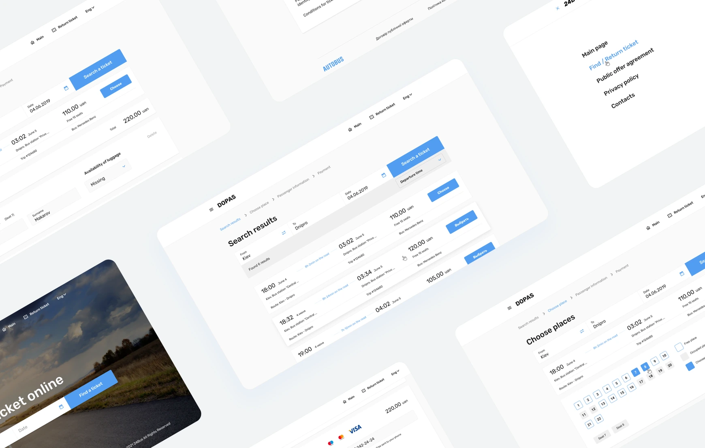

dopas.dp.ua
Lead UX — research, flows, prototyping
Designed from zero — platform launched and generating revenue

01 · No online option existed
Problem & Context
Before dopas.dp.ua, bus tickets in Dnipro were sold exclusively offline — at ticket offices and directly from drivers. For a city with diverse ridership spanning all age groups, this meant queues, cash dependency, and no record of purchase.
The challenge: build an online ticketing platform from zero that works for everyone — from teenagers booking on a phone to elderly passengers unfamiliar with digital services.
02 · From research to handoff
Process
1.0
Market Analysis
Audited existing ticketing platforms in Ukraine and nearby markets.
Competitive matrix2.0
Wireframes & Lo-fi
Mapped core user flows — search, seat selection, checkout, ticket storage.
User flow · Lo-fi wireframes3.0
Usability Study
Tested lo-fi prototype with users across age groups.
Usability report4.0
Mockups & Hi-fi
Translated validated flows into high-fidelity screens.
Hi-fi prototype5.0
Testing & Iterating
Refined edge cases — returns, errors, empty states.
Iteration log6.0
Hand-off
Full specs, annotations, developer handoff.
Figma handoff03 · What the competition looked like
Artifacts: Market Analysis
01
Direct competitive audit
Reviewed 6 Ukrainian and regional ticketing platforms — Busfor and Infobus as direct competitors, Ukrzaliznytsia as the rail alternative travellers weigh against a bus.
02
Comparative analysis
Compared booking flows across competitors — search, seat selection, payment, post-purchase experience.
03
Key insight
Most platforms forced 7+ steps before purchase. None offered ticket storage or self-service returns. This defined dopas's differentiators from day one.
04 · End-to-end booking flow
Artifacts: User Flow
End-to-end booking flow — from opening the website to downloading a ticket. Dashed line shows the return path when user decides not to purchase.
05 · What testing revealed
Artifacts: Usability Findings
01
Seat selection too late in the flow
Users tried to go back mid-form to choose seats, causing confusion and drop-off.
Fix: Moved seat selection before passenger info02
No luggage option at booking
Multiple users abandoned the flow thinking the platform didn't support extra luggage.
Fix: Luggage toggle added on passenger info screen03
Price not visible until checkout
Total cost including fees wasn't shown on results page — felt like hidden costs, reducing trust.
Fix: Full price shown on search results card04
Return ticket not discoverable
3 of 5 users assumed one-way was the only option.
Fix: Round-trip toggle added to homepage search06 · Defining the structure
Wireframes
Lo-fi wireframes defined the core structure before any visual design decisions were made.
Entry point. Search widget front and centre — destination, date, passenger count.
Filterable list. Price, duration, and departure time visible without opening the ticket.
Interactive bus map. Colour-coded by availability. One tap to select.
Minimal form — only required fields. Luggage toggle added after usability study.
Full price breakdown and cancellation policy visible before payment.
07 · What changed after testing
Mockups: Before / After
High-fidelity screens reflecting changes made after two rounds of usability testing.
01 — Homepage
Before
Search buried below fold, no round-trip option
After
Search front and centre, round-trip toggle added
02 — Search results
Before
Price shown without fees, no filters
After
Full price on card, filters by time and price
03 — Seat selection
Before
Appeared after passenger info form
After
Moved before passenger info — matches mental model
04 — Passenger info
Before
8 fields, optional and required mixed
After
5 required fields, luggage toggle inline
05 — Checkout
Before
First time user sees total with fees
After
Full breakdown + cancellation policy upfront
08 · Live and generating revenue
Outcome
Launched in late autumn 2020. Users responded positively — the platform filled a real gap in the local market where no online alternative existed before.
dopas.dp.ua has been live and generating revenue since launch.
09 · Looking back
Reflection
What I'd do differently
Start with a design system from day one. Building components ad hoc slowed the hi-fi phase and created inconsistencies fixed during handoff.
What I learned
Usability testing is non-negotiable — two sessions caught four critical flow issues that would have shipped as bugs. No amount of design intuition replaces watching a real user get stuck.